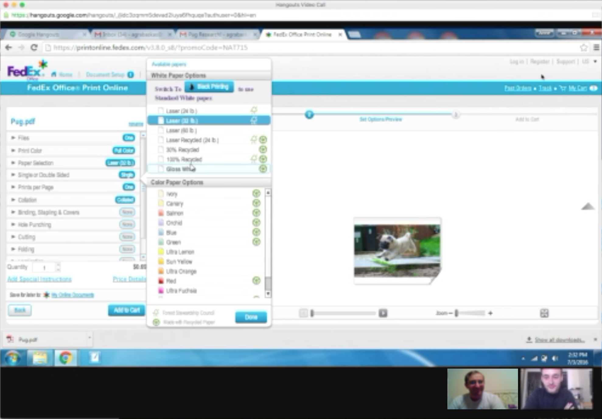
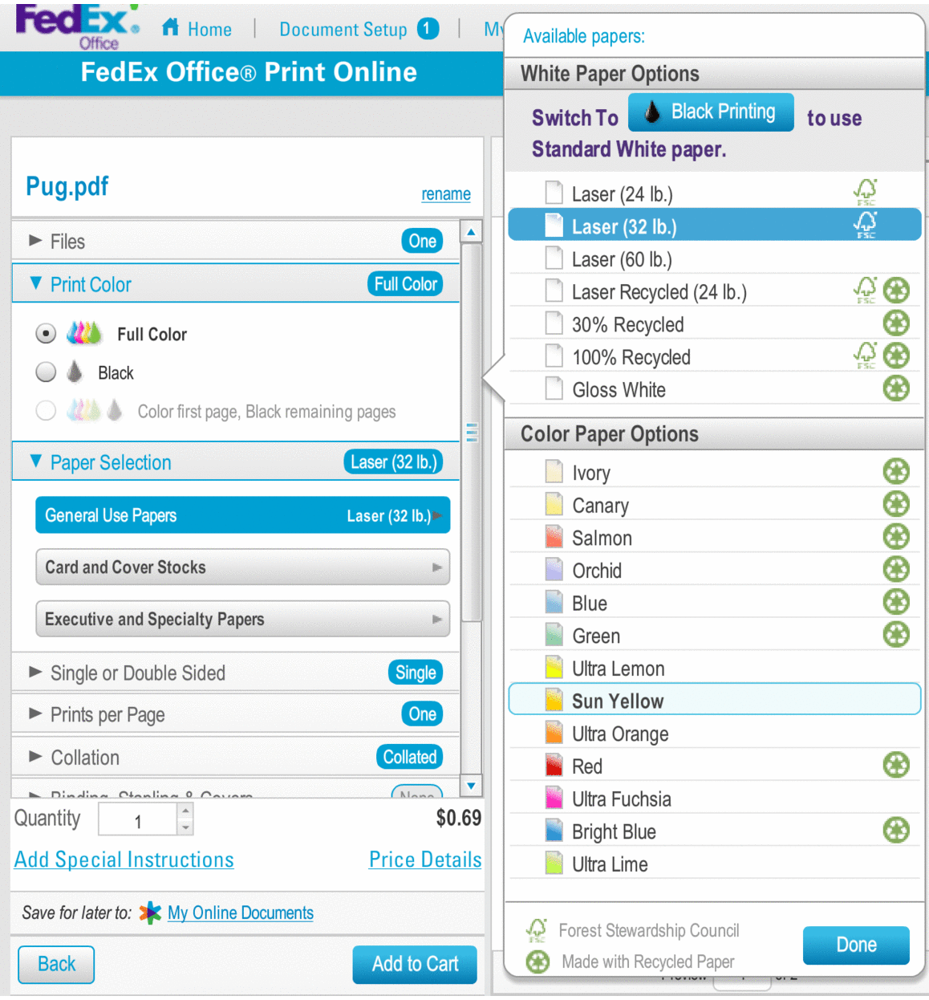

Just because you can buy a perfectly functional color printer for $55 on Amazon doesn’t mean we all have one at home. I don't have one in my tiny San Francisco studio apartment, so when I need to print something, I usually turn to a web service. For speed and geographic convenience, I have been using FedEx Office’s online printing.
Actually placing a print order using their sluggish Flash interface, though, is unpleasant at best. Every time I've tried to print a simple order, I’m shocked by how tedious the process is. I decided to run a small usability study to see if anyone else felt lost in the jungle of options the site forces on its users.
In my own experience using the printing site, I noticed a couple recurring points of friction. In this study, my goal was to question whether the troublesome points I had noticed were in fact problematic for other users. I also wanted to see if participants could identify other obstacles that I hadn’t noticed. I hoped to identify the most notable pain points and propose remedial design solutions to smooth them over.
I recruited and interviewed three participants, all of whom were accustomed to using online services, and gave them a simple task to complete. I observed as each participant progressed through the task, and I recorded their screen and audio for data collection and reference.
After the final interview, I reviewed the data I'd gathered and noted which elements of the process proved to be most challenging across all three participants. There were several spots that caused trip-ups during the interviews, but there were two specific design problems that seemed to hinder participants the most:
After a user uploads a file to print, they are taken to a Print Options screen. I asked participants to customize the print color and paper type. When a user clicks either Print Color or Paper Selection, the options for both of those categories pop open, as shown here.
This sudden barrage of options proved to be confusing for users.
"When I click Print Color, I just wanna see the print color!"
"Wow, what is going on here? When you pick color, the paper options come up too, and that really bothers me."
Participants wanted to deal with only one option at a time, instead of the current explosion of options that was forced on them.
It's normal for users to want to modify information after they've entered it, and FedEx does allow you to go back and edit your cart from the final checkout screen. However, doing so erases all choices and information entered up to that point.
In this study, participants were very surprised that after going back to make minor modifications, clicking "Add to Cart" did not whisk them back to the final checkout screen, but instead asked them to laboriously re-enter all of their information. Participants reacted quite strongly to this upsetting news.
"Wait, now I have to do all of this again? That's not good."
"They can’t just store your order form while you go back and make edits? I was ready to submit the payment and be done with it..."
It seems like users are frustrated when they input information, only to have it forgotten moments later. One participant acknowledged that it creates a "lack of confidence" in the site.
The main problems users faced when choosing their print options was that they were presented with too many options at once, and clicking on one dropdown sometimes opened other dropdowns unexpectedly.
Both of these annoyances can be addressed by a single solution: presenting fewer options at one time. More precisely, presenting only the dropdown for the category the user actually selects, and not extraneous options that the user may not have wanted to see. This way, the user will be shown choices that are more pertinent to their needs, and more in line with what they expect to happen.
If a user selects Print Color, for example, we should only show them the ink color options, and not the options for paper type. Similarly, clicking on Paper Selection will open that dropdown by itself, without popping Print Color open as well. Finally, the surprising pop-up of the many paper types (i.e. Laser, Recycled, etc.) will only pop up if the user clicks on "General Use Papers," rather than opening automatically. This may risk a slight reduction in discoverability, but the tradeoff in not overwhelming the user is well worth it.
Ideally, the user should be able to reach the checkout screen, go back and modify their order, then click "Add to Cart" and be whisked back to the final step in the process to submit their order. The user could feel free to go back and make changes, skipping the frustration of redundantly re-entering information.
There are obvious use-cases where deletion of data is healthy for security reasons, but if a user wants to make a change to their order before they checkout, they shouldn't feel punished for doing so. By simply caching session data that has already submitted, including preferred FedEx location, print date/time, and contact/payment information, the user wouldn't be forced to go back through those screens multiple times.